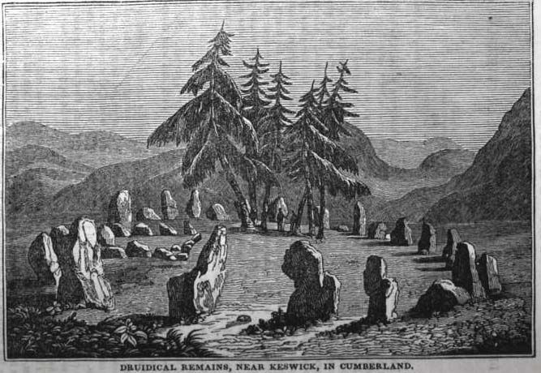

Published April 23, 2026

High in the mountains near Keswick, I stumbled upon one of the oldest Neolithic stone circles in Britain, dated to ~3200BC, overlooking the surrounding majestic fells of the Lake District. Known as 'The Keswick Carles', an old tale is passed down among locals that the rocks are pipers who were turned to stone as punishment for dancing on the Sabbath. The word 'Carles' derives from the Old Norse word karl (man), reflecting local folklore that the stones are people who were petrified (turned to stone) for their transgressions.
The tale tells of a wedding one Saturday, and all the guests were dancing late into the night. At midnight, the fiddler stopped playing for them, saying it was profane to play on the Sabbath. The bride was furious and claimed she would find another player even if it meant trabelling to hell to fetch one. But she needn't as a dark stranger then appeared and continued the music, playing faster and faster as the night went on. As the music accelerated, the merry-makers danced faster and faster until they could not stop. At dawn, the music ceased and the dancers collapsed in exhaustion. But in the light of day they saw that the fiddler was none other than the Devil. They tried to run away from him but found they could not, as they had been turned to stone. The Devil told them he would return one day to play for them again, but until that day comes they stand, as still as stone, on a mountain nearby Keswick.
Samuel Coleridge visited The Keswick Carles with William Wordsworth on 11 November 1799, writing in his journal entry for that day:
“The Mountains stand one behind the other, in orderly array as if evoked by & attentive to the assembly of white-vested Wizards.”
Coleridge's imagination, the stones appeared as 'white-vested wizards,' an assembly of ancient, powerful figures who had summoned the mountains to stand around them like an army. This is actually reminiscent of a folktale about Long Meg, another stone circle only 20 miles away. Local Cumbrian folklore claims the roughly 70 stones at Long Meg were a coven of witches petrified by a wizard, again for dancing wildly on the Sabbath. The tallest of these stones is 'Long Meg', a towering 12-foot monolith of red sandstone which, from a certain angle, is said to resemble the profile of a witch looking toward the 69 smaller stones all lined up in a circle, referred to as 'the daughters.' If you correctly count the total number of stones, then place your ear against Long Meg as it is said she will whisper secrets to you. But if you chip a piece off Long Meg, the stone is said to bleed. As Wordsworth put it in his poem about the Neolithic site entitled 'The Monument Commonly Called Long Meg and Her Daughters':
"A weight of awe, not easy to be bourne, / Fell suddenly upon my spirit – cast, / From the dread bosom of the unknown past, / When first I saw that family forlorn..."
The 'family forlorn' is an allusion to Long Meg and her daughters. Funnily enough, the wizard who turned them all to stone actually centres on the real historical figure of Michael Scot, a 13th-century mathematician and scholar nicknamed 'The Wizard of the North' for supposedly possessing a book of spells that gave him power over spirits. His reputation was solidified when a group of local women were gathered on the moor, dancing and carousing on the Sabbath day, and Scot handling of this major taboo has gone down in folklore as a magical confrontation between a wizard and unruly witches that would stand as a warning to future transgressors.
But there is also a lesser-known folk fragment of the Keswick Carles that involves Michael Scot. According to this legend, the stones were originally a troop of giants who roamed the Lake District fells. Scot tricked them into forming a perfect circle to participate in a great binding spell that would supposedly grant them eternal life. Scot had a different motive. He intended to rid the land of the giants' destructive presence. As the giants began to chant and the spell reached its peak, the wizard flipped the magic. Instead of binding their souls to the land, he bound their bodies to the stone. The 'Giants' story is a separate layer of myth that focuses on the monumental scale of the rocks, which can weigh up to 16 tonnes each. He tricked them into standing in a circle for a ritual before casting a binding spell that turned their flesh to stone.
This is likely a mystical spin on real events. In local oral tradition, the stones are said to be a group of pagan elders who refused to convert to Christianity. Gathering on the mountain to perform forbidden pagan rituals against the rising influence of the new church, the story of giants would likely have been spread by the Christian church to besmirch local pagans. By attaching Christian morality tales to ancient monuments, the Church transformed sites of pagan worship into warnings against non-Christian behaviour.
It is also said that no person can count the number of stones twice and arrive at the same total. It is said that supernatural forces, often attributed to the Devil or the magic of the petrified beings themselves, will purposefully confuse you or shift the stones’ appearances to prevent an accurate tally. This sounds like it would be too easy to falsify, does it not? But oddly even official sources today disagree. The National Trust Board website lists 40 stones, while many archaeological records count 38 standing stones in the main circle. There is an internal rectangular enclosure of 10 stones known as the Sanctuary which some visitors include in their total, while others do not, leading to counts ranging from 38 to 48 or more.
Folklore maintains that whoever thrice counts the same number will have their heart's desire fulfilled. There is a tale of a baker who tried to beat the curse by placing a loaf of bread on every stone as he counted. When he went back to collect them, he found loaves missing or extra stones with no bread, spirited away either by fairies or the Devil himself. But there is another explanation for why the stones may be moving. Coleridge was one of the first to notice that the site was beign 'restored' or altered for early tourists. In November 1799, he wrote in his journal:
"The Keswickians have been playing Tricks with the stones."
The peril of counting things appears in other superstitions, such as it bringing bad luck to count the visible stars. This reminds me of David Graeber's writing on the evil of accounting. It was funny to me that something so boring as accounting could be seen as evil, but the logic is revealing. Because a healthy community is one where everyone is slightly in debt to everyone else at all times. This web of unfulfilled, vague promises is what we call 'trust'. Rigorous accounting only becomes necessary when you are dealing with people you don't trust or plan to see again. So Graeber shows how, in many cultures, counting money owed to you is rude behaviour that signals a lack of trust that they will pay you back. And the very act of settling a debt completely comes across as a way of saying you no longer want anything to do with that person. In contrast, never quite 'balancing the books' is what maintains a friendship or a healthy community. Once you can calculate exactly what someone owes you, you can also justify actions that would otherwise seem outrageous or obscene, like seizing someone’s land or children because they failed to balance a ledger.
Hence counting money was deeply frowned upon and those who counted money were deemed untrustworthy. By their lights, the fact that accounting is hardly reflected upon in modern societies, assumed to be a perfectly reasonable practice let alone an entire industry embedded into corporate life, is striking and deeply worrying to think about.
Graeber cites the Tiv in Nigeria as a primary example of a society where social life is maintained by never being 'even'. If one person gives another a gift (e.g., shoes), the recipient is obligated to return something later (e.g., an apple). Crucially, the return gift must not be seen as exactly equal in value. If someone gives back a gift of identical value, it is interpreted as a sign that they no longer wish to be in a relationship with the other person. Their mythology includes a "flesh debt" which serves as a dark metaphor for the dangers of accumulating too much power or precision in obligations, acting as a social leveling mechanism.
Perhaps this very same moral was embedded in the counting supersition of the Keswick Carles. One way these types of moral attitudes were spread in the traditional English countryside would have been through the telling of folktales like these. Maintaining a deep suspicion of counting may seem primitive to us now, but English life in the countryside would have relied much more on help being given freely based on need ('Everyday Communism') rather than being tracked for future repayment, as tracking creates a hierarchy that destroys the bond of the community. For beneath the florid, bucolic poetry of Coleridge and Wordsworth lies a grittier reality of peasant life in Cumbria over the centuries. The Romantic image of the 'lone shepherd' amongst the pastoral landscape hides a much harsher subsistence reality in a hard marginal landscape. Locals weren't just tending sheep. They would frequently skirt the law to survive. Poaching was widespread, and smuggling routes threated through valleys and across passes. As the industrial revolution broke tradition community ties and bonds, families were displaced as men and boys were forced to seek work in places like Coniston Copper Mines and Honister Slate Mine. There, they worked in brutal, dangerous conditions in which accidents, lung disease and early death was common.
This poetic whitewashing of history may be our generation's equivalent of the folktale. We tell ourselves we are too scientific nowadays to be captured by myths and scoff incredulously at how people could be fooled by stories of wizards and devils. But we readily fall for 'official' tales of local history told authoritatively, without any interest in digging deeper or insisting on evidence. I am sure those Christians who fell for an origin tale involving the Devil, laughed at the pagans before who fell for the same story involving a wizard. Today, we laugh at both while falling for the origin story of Cumbria as a pastoral countryside of farmers tending peacefully to sheep. But it's even more ridiculous than that. Still today, modern supernatural tales about the Keswick Carles abound. Detailed accounts of strange sightings have captured the imagination of 20th and 21st century visitors, involving globular lights moving between the stones at night. One of the most detailed accounts comes from 1919, when a Mr. Singleton witnessed a series of bright lights moving horizontally around the circle, with one approaching him and his companion before silently extinguishing itself just feet away. More recently, in 2012, a paranormal investigation group recorded what they believed to be electronic voice phenomena—faint, voice-like sounds captured on audio recorders near the stones.
Spooky. Perhaps spookier still is the endurance of the desire for myths and folktales. How many of the more interesting tales have we lost irrevocably since the moment, not long ago, we collectively began to believe that cultural myths were not worth passing on? The stories they tell you about Wordsworth at his National Trust occupied family home in Cockermouth are myths, but they are boringly sanitised versions of the past. If these are mythic versions of a past that was much more interesting, we're clearly not that repelled by fabrications of history so long as they sound and feel good. And if we're going to hold onto fiction anyway, I'd prefer the more thrilling and obviously false tale you couldn't easily mistake for fact, over the banal sanitised narrative which you can accidently mistake for truth.